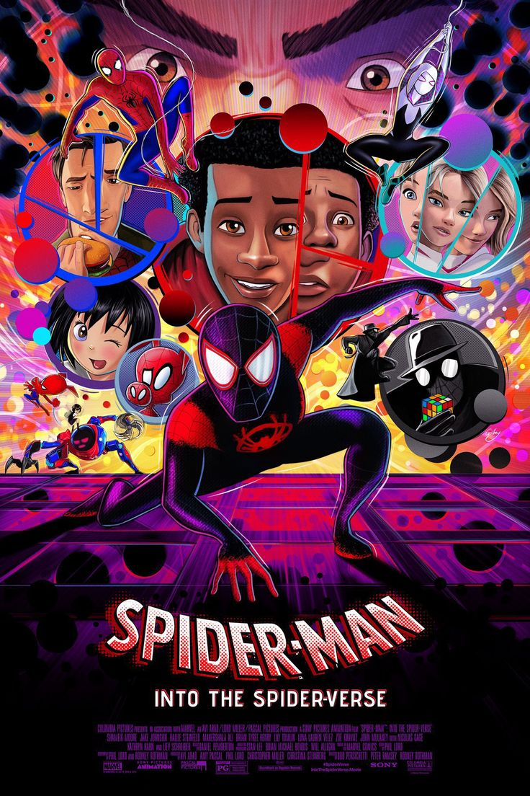

Miles Morales returns for the next chapter in the Spider-Verse series. He teams up with Gwen Stacy and travels through different universes, meeting new versions of Spider-People while facing a powerful villain. The film explores identity, responsibility, and what it means to choose your own path.
“Everyone keeps telling me how my story is supposed to go. Nah. I'm gonna do my own thing.”